Gradus.jl Documentation
Spacetime generic, general relativistic ray-tracing (GRRT) in Julia.
This package is in development and subject to rapid breaking changes, with documentation updates lagging behind features.
About
Gradus.jl is a suite of tools related to tracing geodesics and calculating observational signatures. Gradus.jl requires only a specification of the non-zero metric components of a chosen spacetime in order to solve the geodesic equation and compute a wide variety of trajectories and orbits. Various algorithms for calculating physical quantities are implemented generically, so they may be used with different classes of spacetime with minimal implementation.
Currently, Gradus.jl can be used for any static, axis-symmetric spacetime to calculate:
- geodesic orbits and special radii (event horizon shapes, ISCO radii, etc.)
- null / time / space like trajectories including for charged particles
- black hole shadows
- redshift images
- Cunningham transfer functions
- line profiles and spectra
- reverberation transfer functions
- time-lags from different coronal models
- emissivity profiles on the accretion disc
- covariant radiative transfer
- various toy accretion models (thin disc, $\alpha$-discs, rotationally-supported polish doughnut, etc)
- non-symmetric disc geometries
- mesh file geometry
The library is written to make adding new features as effortless as possible. See Examples for more. Many new features are currently being developed as our research advances.
Gradus.jl uses DifferentialEquations.jl and ForwardDiff.jl as the backend for integrating and solving the geodesic equation for arbitrary metrics, and vendors the DifferentialEquations.jl solver and callback system, making Gradus.jl easy to extend for new problems. Gradus.jl currently supports multi-CPU integration and analysis, with GPU support on the horizon.
Usage
We assume you already have Julia >1.6.
All non-General dependencies for Gradus.jl are in the AstroRegistry which can be added to Julia with:
julia>] registry add https://github.com/astro-group-bristol/AstroRegistryNB: the Julia General Registry is required to install Gradus, however this should be configured by default with any Julia installation.
Gradus.jl can then be fetched easily:
julia>] add Gradus
julia> using GradusSee GettingStarted for setting up your first traces.
See also
<hr>
<p align="center"> Astrophysics Group Bristol </p>
About
Gradus.jl is a research tool for calculating geodesic paths in arbitrary space-times. It is currently work-in-progress, and breaking changes are frequent, as the interface is redesigned to match changing use-cases.
It is part of a larger developing eco-system of codes, created by members of the University of Bristol Astrophysics Group. Gradus.jl is primarily being developed by:
- Fergus Baker (PhD Student)
- Dr. Andrew Young (Associate Professor)
For more University of Bristol Astrophysics Group codes, see our GitHub organisation.